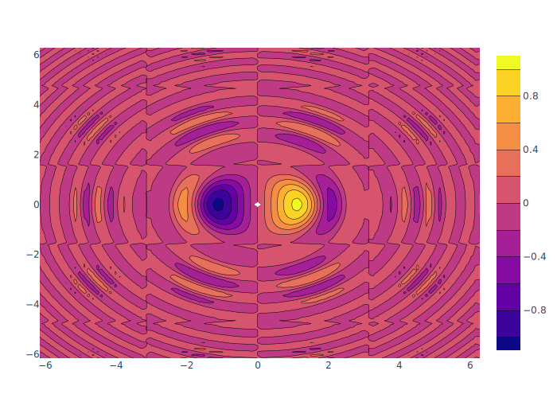
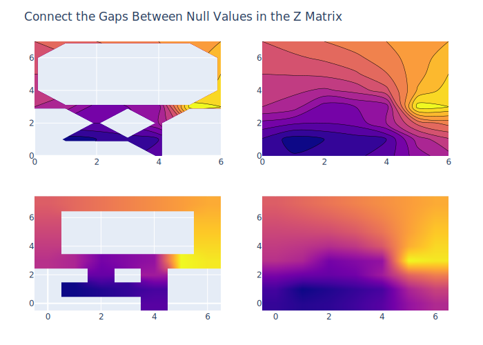

using PlotlyJS
function contour1()
x = y = [-2*pi + 4*pi*i/100 for i in 1:100]
z = [sin(x[i]) * cos(y[j]) * sin(x[i]*x[i]+y[j]*y[j])/log(x[i]*x[i]+y[j]*y[j]+1)
for i in 1:100 for j in 1:100]
z_ = [z[i:i+99] for i in 1:100:10000]
data = contour(;z=z_, x=x, y=y)
plot(data)
end
contour1()
function contour2()
z = [10 10.625 12.5 15.625 20
5.625 6.25 8.125 11.25 15.625
2.5 3.125 5. 8.125 12.5
0.625 1.25 3.125 6.25 10.625
0 0.625 2.5 5.625 10]
data = contour(;z=z)
layout = Layout(;title="Basic Contour Plot")
plot(data, layout)
end
contour2()
function contour3()
x = [-9, -6, -5 , -3, -1]
y = [0, 1, 4, 5, 7]
z = [10 10.625 12.5 15.625 20
5.625 6.25 8.125 11.25 15.625
2.5 3.125 5. 8.125 12.5
0.625 1.25 3.125 6.25 10.625
0 0.625 2.5 5.625 10]
trace = contour(x=x, y=y, z=z)
layout = Layout(title="Setting the X and Y Coordinates in a Contour Plot")
plot(trace, layout)
end
contour3()
function contour4()
z = [10 10.625 12.5 15.625 20
5.625 6.25 8.125 11.25 15.625
2.5 3.125 5. 8.125 12.5
0.625 1.25 3.125 6.25 10.625
0 0.625 2.5 5.625 10]
data = contour(;z=z, colorscale="Jet")
layout = Layout(;title="Colorscale for Contour Plot")
plot(data, layout)
end
contour4()
function contour5()
z = [10 10.625 12.5 15.625 20
5.625 6.25 8.125 11.25 15.625
2.5 3.125 5. 8.125 12.5
0.625 1.25 3.125 6.25 10.625
0 0.625 2.5 5.625 10]
data = contour(;z=z,
colorscale="Jet",
autocontour=false,
contours=Dict(:start=>0, :end=>8, :size=>2))
layout = Layout(;title="Customizing Size and Range of Contours")
plot(data, layout)
end
contour5()
function contour6()
z = [10 10.625 12.5 15.625 20
5.625 6.25 8.125 11.25 15.625
2.5 3.125 5. 8.125 12.5
0.625 1.25 3.125 6.25 10.625
0 0.625 2.5 5.625 10]
data = contour(;z=z, colorscale="Jet", dx=10, x0=5, dy=10, y0=10)
layout = Layout(;title="Customizing Spacing Between X and Y Axis Ticks")
plot(data, layout)
end
contour6()
function contour7()
z = [NaN NaN NaN 12 13 14 15 16
NaN 1 NaN 11 NaN NaN NaN 17
NaN 2 6 7 NaN NaN NaN 18
NaN 3 NaN 8 NaN NaN NaN 19
5 4 10 9 NaN NaN NaN 20
NaN NaN NaN 27 NaN NaN NaN 21
NaN NaN NaN 26 25 24 23 22]'
p1 = plot(contour(;z=z, showscale=false))
p2 = plot(contour(;z=z, connectgaps=true, showscale=false))
p3 = plot(heatmap(;z=z, zsmooth="best",showscale=false))
p4 = plot(heatmap(;z=z, zsmooth="best", connectgaps=true, showscale=false))
p = [p1 p2; p3 p4]
relayout!(p, title="Connect the Gaps Between Null Values in the Z Matrix")
p
end
contour7()
function contour8()
z = [2 4 7 12 13 14 15 16
3 1 6 11 12 13 16 17
4 2 7 7 11 14 17 18
5 3 8 8 13 15 18 19
7 4 10 9 16 18 20 19
9 10 5 27 23 21 21 21
11 14 17 26 25 24 23 22]
p1 = plot(contour(;z=z, line_smoothing=0))
p2 = plot(contour(;z=z, line_smoothing=0.85))
p = [p1 p2]
relayout!(p, title="Smoothing Contour Lines")
p
end
contour8()
function contour9()
z = [10 10.625 12.5 15.625 20
5.625 6.25 8.125 11.25 15.625
2.5 3.125 5. 8.125 12.5
0.625 1.25 3.125 6.25 10.625
0 0.625 2.5 5.625 10]
data = contour(;z=z, contours_coloring="heatmap")
layout = Layout(;title="Smooth Contour Coloring")
plot(data, layout)
end
contour9()
function contour10()
z = [10 10.625 12.5 15.625 20
5.625 6.25 8.125 11.25 15.625
2.5 3.125 5. 8.125 12.5
0.625 1.25 3.125 6.25 10.625
0 0.625 2.5 5.625 10]
data = contour(;z=z, colorscale="Jet", contours_coloring="lines")
layout = Layout(;title="Contour Lines")
plot(data, layout)
end
contour10()
function contour11()
z = [10 10.625 12.5 15.625 20
5.625 6.25 8.125 11.25 15.625
2.5 3.125 5. 8.125 12.5
0.625 1.25 3.125 6.25 10.625
0 0.625 2.5 5.625 10]
data = contour(;z=z,
colorscale=[[0, "rgb(166,206,227)"],
[0.25, "rgb(31,120,180)"],
[0.45, "rgb(178,223,138)"],
[0.64, "rgb(51,160,44)"],
[0.85, "rgb(251,154,153)"],
[1, "rgb(227,26,28)"]])
layout = Layout(;title="Custom Contour Plot Colorscale")
plot(data, layout)
end
contour11()
function contour12()
z = [10 10.625 12.5 15.625 20
5.625 6.25 8.125 11.25 15.625
2.5 3.125 5. 8.125 12.5
0.625 1.25 3.125 6.25 10.625
0 0.625 2.5 5.625 10]
data = contour(;z=z,
colorbar=attr(;title="Color Bar Title",titleside="right",
titlefont=attr(;size=14,
family="Arial, sans-serif")))
layout = Layout(;title="Colorbar with Title")
plot(data,layout)
end
contour12()
function contour13()
z = [10 10.625 12.5 15.625 20
5.625 6.25 8.125 11.25 15.625
2.5 3.125 5. 8.125 12.5
0.625 1.25 3.125 6.25 10.625
0 0.625 2.5 5.625 10]
data = contour(;z=z,
colorbar=attr(;thickness=75, thicknessmode="pixels",
len=0.9, lenmode="fraction",
outlinewidth=0))
layout = Layout(;title="Colorbar Size for Contour Plots")
plot(data,layout)
end
contour13()
function contour14()
z = [10 10.625 12.5 15.625 20
5.625 6.25 8.125 11.25 15.625
2.5 3.125 5. 8.125 12.5
0.625 1.25 3.125 6.25 10.625
0 0.625 2.5 5.625 10]
data = contour(;z=z,
colorbar=attr(;ticks="outside", dtick=1,
tickwidth=2, ticklen=10,
tickcolor="grey", showticklabels=true,
tickfont_size=15, xpad=50))
layout = Layout(;title="Styling Color Bar Ticks for Contour Plots")
plot(data,layout)
end
contour14()